I build AI automation systems and the software behind them.
Software developer and automation specialist based in Cebu City. I design workflows in n8n that connect APIs, AI agents, and business systems so teams spend less time on manual work — and I write the production code around them: data tooling, SAP integrations, and full‑stack web applications.
Currently a software developer at Alliance Software, working on healthcare and enterprise systems. Long‑term, I'm focused on AI infrastructure and intelligent automation.
Selected work
-
mWell — healthcare web platform
Web platform for clinics and hospitals under Metro Pacific, currently being prepared for BIR accreditation. Full‑stack development across a multi‑repository codebase, with authentication, PDF reporting, and containerized services.
Laravel, NestJS, TypeScript, React, PostgreSQL, MySQL, Docker, Keycloak, Jasper Reports -
SIRIUS — POS / SAP middleware
Middleware connecting SAP with an internal CloudPOS system. Started on code‑based unit testing, then moved into development to build the SAP‑facing APIs and a batching and pagination procedure that kept performance stable across hundreds of thousands of records.
Java, Spring Batch, JUnit, Postman, Amazon Redshift, S3, Lambda -
WITS data tools — three rebuilds, three languages
A set of data‑processing tools for an enterprise client, delivered as full rebuilds to meet changing requirements: a Python encryption utility with a Pytest / Black / Flake8 quality pipeline, a C# dataset comparison tool, and a Java log checker for finding errors and anomalies in system logs.
Python, Pandas, Polars, C#, Java, Spring Boot, Spring Batch, Jacoco, PostgreSQL, Amazon Redshift
Automation
End‑to‑end workflows built in n8n over the past nine months, combining LLMs, external APIs, and databases. Two are in production for paying clients. Each screenshot is the actual workflow canvas.
-
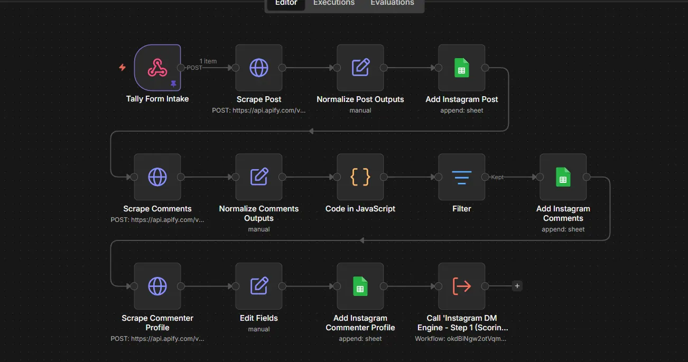
Instagram lead scraper — in production
A form submission kicks off three scraping stages through Apify: the post itself, its comments, and each commenter's profile. Results are normalized, filtered, and appended to Google Sheets, then passed to a scoring engine that decides who gets a DM.
n8n, Apify, Google Sheets, sub‑workflows -
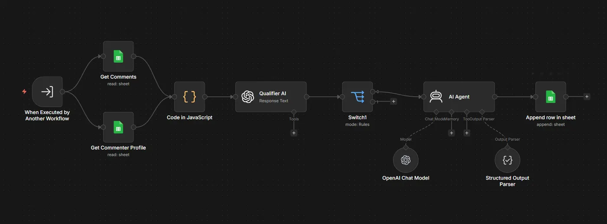
Instagram outreach — in production
The second half of the pipeline. Qualifies each lead against the client's criteria, writes a personalized opener with an LLM, and sends the outreach on a schedule so the account stays within safe limits.
n8n, OpenAI, Google Sheets -
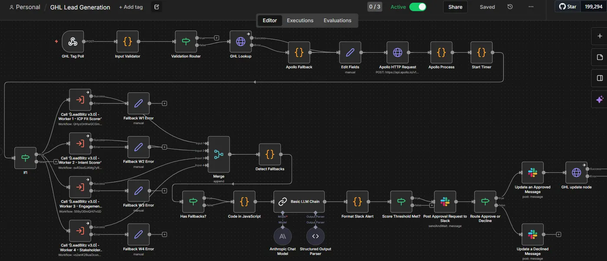
Lead qualification with human approval
Polls GoHighLevel for tagged contacts, validates and enriches them through Apollo, then fans out to four scoring workers (ICP fit, intent, engagement, stakeholder role) that each have their own fallback path. Scores merge into a structured LLM verdict; anything above threshold is posted to Slack for a one‑click approve or decline, which writes back to the CRM.
n8n, GoHighLevel, Apollo, Claude, Slack, structured output parsing -
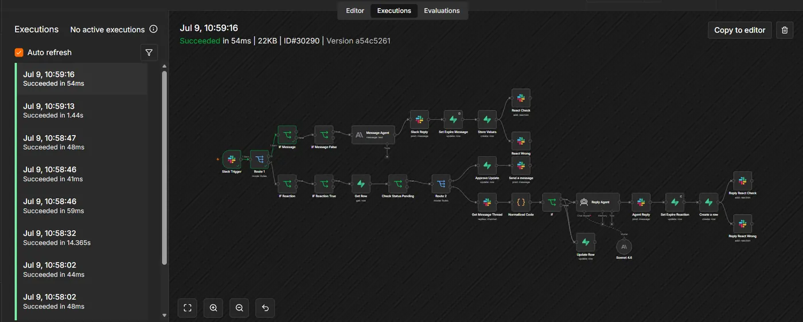
Slack assistant agent
A Slack bot that answers messages and follows threads. Reactions act as controls — approve, expire, flag wrong — and every message is tracked in a database so the agent keeps context across replies. Runs in around 50 ms for routing and a few seconds for LLM turns.
n8n, Slack, Claude Sonnet, database rows for state -
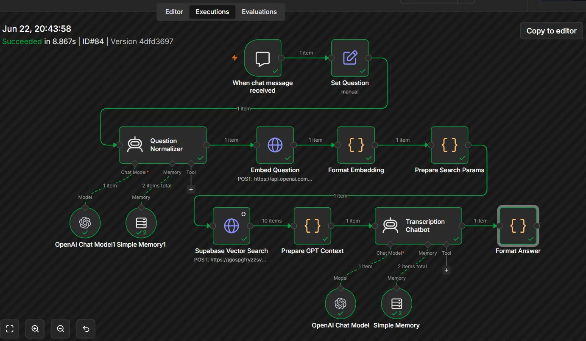
RAG chatbot
Ingests documents into a vector store, then answers questions from that knowledge base. Retrieves the relevant chunks per query so the model answers from the source material rather than from memory.
n8n, vector database, embeddings, OpenAI -
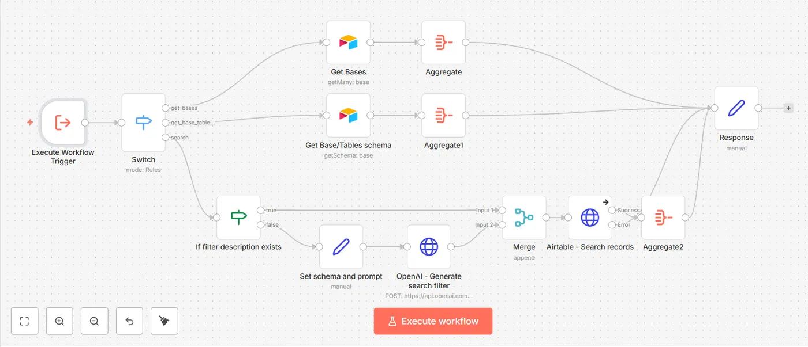
Airtable management agent
A conversational agent with Airtable as its toolset. It creates, updates, validates, and syncs records from natural‑language requests, following predefined rules for what can change and when.
n8n AI Agent, Airtable, OpenAI -
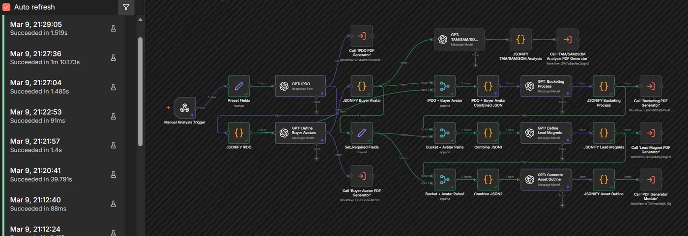
Market analysis generator
Gathers external data for a given market or company, structures it, and produces a formatted analysis report automatically.
n8n, web data sources, OpenAI -
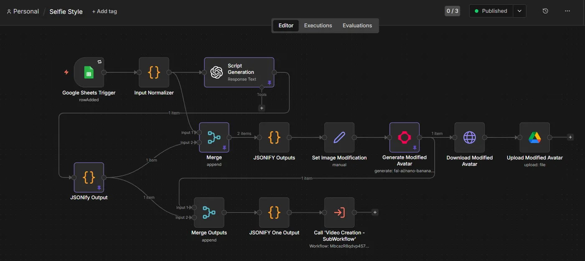
AI ads creation
Turns a short brief into ad creatives and copy variants, cutting the manual production time for campaign assets.
n8n, OpenAI, image generation -
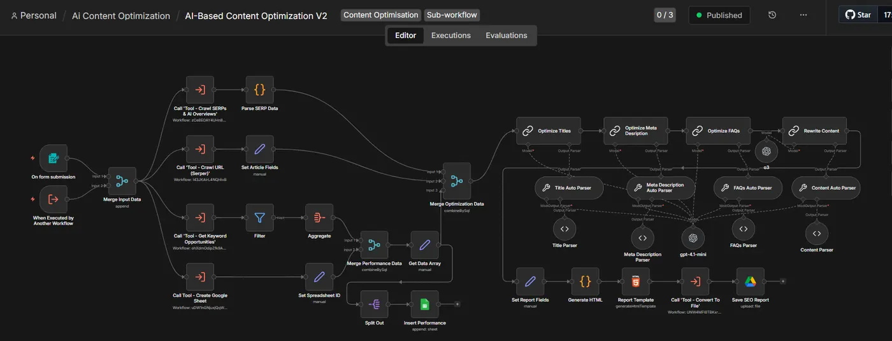
Content optimizer
Refines drafted content for clarity, tone, and structure, then hands it to the SEO workflow below.
n8n, OpenAI -
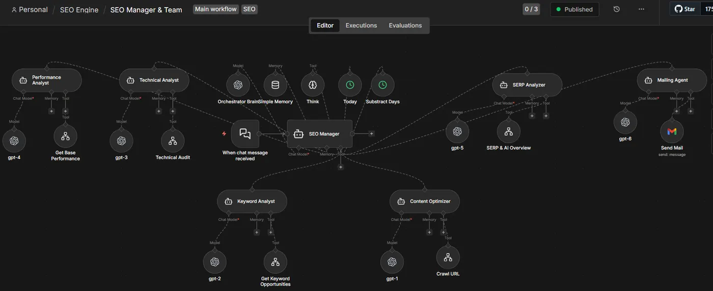
Search engine optimizer
Takes refined content and optimizes it for ranking: keywords, headings, meta text, and internal structure.
n8n, OpenAI, SEO tooling -
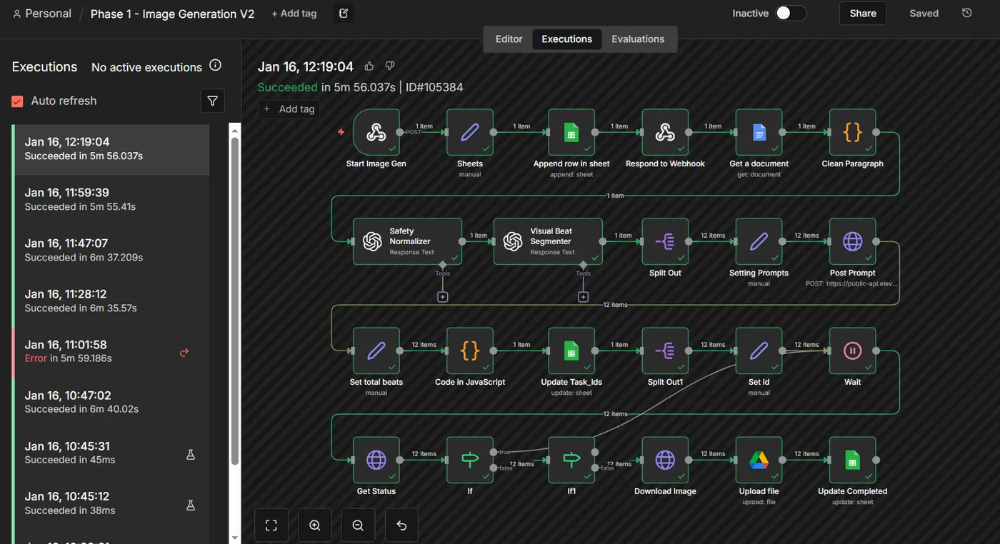
Image generation pipeline — v2
Second iteration of an on‑demand image pipeline, tuned for consistent style across a batch rather than one‑off results.
n8n, fal.ai, Nano Banana, Kling, Higgsfield -
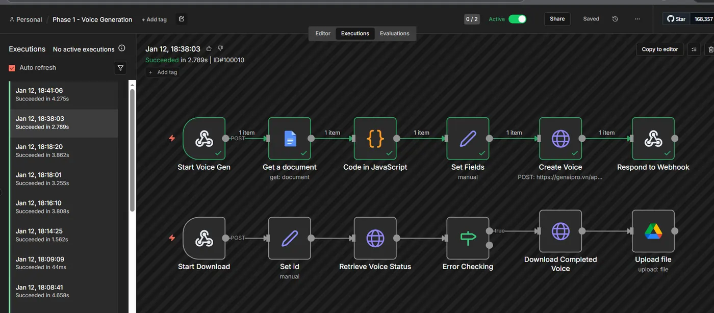
Voice generation pipeline
Generates voice output from text with consistent voice settings, ready for use in content and video workflows.
n8n, ElevenLabs -
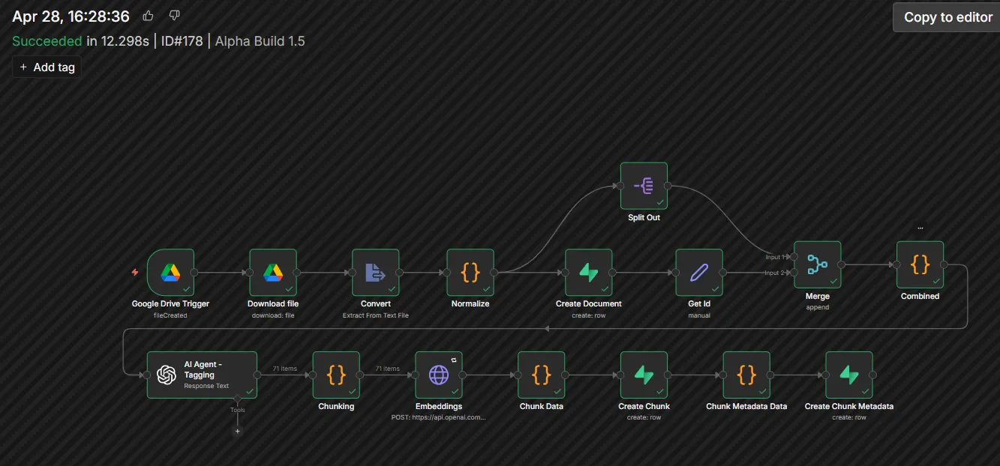
Transcription database
Transcribes audio and stores the result as structured, searchable records.
n8n, speech‑to‑text, database
Experience
Alliance Software — Software Developer
- Built and maintained data‑processing tools for an enterprise client (WITS) across three full rebuilds in Python, C#, and Java.
- Developed and tested SAP middleware (SIRIUS), including SAP‑facing APIs and a batching procedure for large record volumes.
- Currently building mWell, a healthcare platform for Metro Pacific, full‑stack across Laravel, NestJS, React, and TypeScript.
- Work in small teams using Azure DevOps, Bitbucket, and multi‑repository Git workflows.
Encloudment — Web Developer Intern
Three‑month remote internship contributing to front‑end and back‑end features, debugging, and team Git workflows.
University of Cebu — BS Computer Engineering
Lapu‑Lapu and Mandaue campus. Academic projects included an RFID credit and user management system (Flask, Arduino, Raspberry Pi), an Android food‑ordering app with Firebase, and an OpenAI‑powered documentation generator.
Skills
- Languages
- Python, Java, C#, TypeScript, JavaScript, PHP, HTML/CSS
- Frameworks
- Laravel, NestJS, Spring Boot, Spring Batch, Flask, React
- Automation
- n8n, webhook and API integrations, Apify, Supabase, Airtable, GoHighLevel, Slack, Google APIs, Bash
- AI
- OpenAI and Claude integrations, prompt engineering, RAG and vector databases, structured outputs, AI media generation
- Data & cloud
- PostgreSQL, MySQL, Amazon Redshift, S3, Lambda, SQLite, Firebase
- Tooling
- Docker, Keycloak, Git, Azure DevOps, Bitbucket, Postman, Jasper Reports
- Hardware
- Raspberry Pi, Arduino, RFID integration
Contact
Open to roles in AI automation, workflow engineering, and full‑stack development — remote or in Cebu. The fastest way to reach me is email.